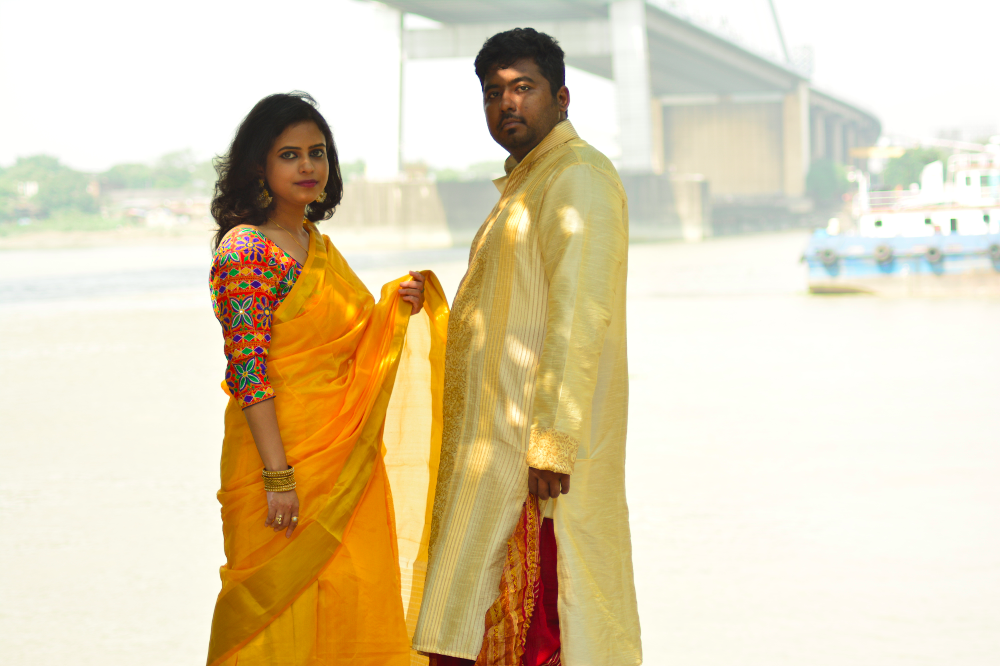

Lights, Camera & Action!
We went around Kolkata, the city we both belong to, were born and brought up and shot some photos of ourselves.

The good part about that we could connect to the people in the good old city, and tried to make our marriage memorable in a cliched way.

Most of the shots were taken in College Street, the 200 years old Street which houses Hindu and Hare Schools ...

...Presidency College (now university) and of course, a hoard load of books, both old and new, the smell and feel of which we love very much.
We also wanted to put some beautiful landscape of the river we have, behind our backgrounds, and thus we shot some in Prinsep Ghat as well.

Prinsep Ghat is the Ghat named after the British architect from the colonial times, James Prinsep. We discovered, after all these years, that the locals call it the White House(!).
And how could we miss the Victoria Memorial, the quentential icon of the city of Kolkata, which was built being inspired by the Taj Mahal.

Overall we had a lot of fun, and didn’t miss the non humans too!

Hope these moments come more often in our lives.